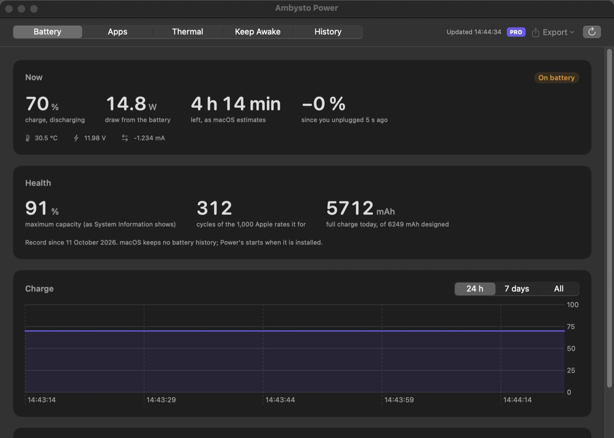
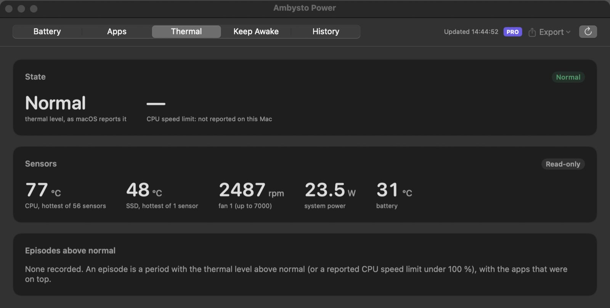
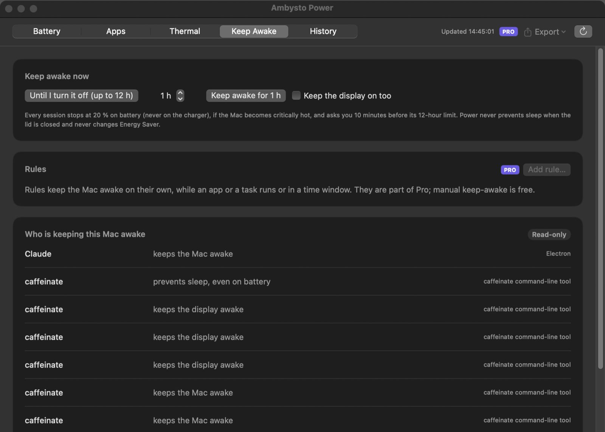
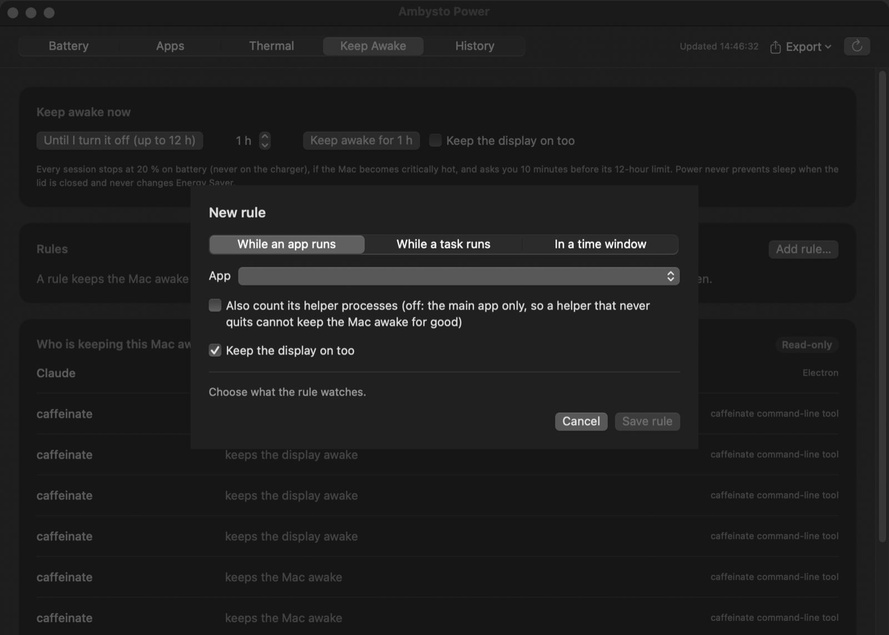
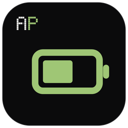

Part of the Ambysto Pro Suite, the jet-pack for every vibeworker · Mac & Windows
Ambysto Power
How's the battery? What drained it? Why is it awake?
Health and cycles, with a record macOS doesn't keep.
An estimate of power by app, labelled as one.
Every app holding your Mac awake, and a safe way to do it yourself.
Free on Mac and Windows · Pro $19.99 one-time
macOS 14+, Apple Silicon and Intel · Windows 11 24H2+ (x64)

Sample battery data. This screenshot was taken on a Mac without a battery.
Four power questions. Four places to look.
macOS answers each one in a different place, and keeps no history.
-
System Information
A percentage, and no trend.
Is the battery getting worse, and how fast? Nothing records it.
-
Activity Monitor
A number from a private formula.
No time window, no "since I unplugged", no history.
-
pmset -g assertions
Who is keeping the Mac awake?
The answer is in Terminal, as plain text.
-
Ambysto Power
Measure first. Change one thing, safely.
Read the battery, the apps, the heat and the sleep list. The only thing it changes is whether your Mac may sleep, and only while a session you started is on.
Battery health, with a history.
Health is the full-charge capacity divided by the design capacity, next to the cycle count and the maker's rating. macOS keeps no battery history, so Power starts one.
- Now. Charge, power source, time remaining as macOS estimates it, temperature, voltage and current. Discharge rate in watts while you are on battery.
- Health, plainly. If macOS publishes its own maximum-capacity percentage, it is shown beside Power's ratio. If not, it is left out, never guessed.
- A point every day. Full-charge capacity and cycle count, kept for the life of the install in Free too. The window says when your record started.
- Since you unplugged. The charge lost over the time elapsed, for example "−23 % in 1 h 20 min".
- On a desktop Mac. It says there is no battery in one sentence. Every other part still works.
Which apps used the power. An estimate.
One row per app, with its helpers grouped in. Over the last 5 minutes, the last hour, or since you unplugged. The column is headed "estimate" because it is one.
- A share, not watts. Each app's share of the measured apps, worked out from CPU time. It is not a measurement of watts.
- GPU is not measured. No public macOS interface attributes graphics work to a process, so the window says so instead of hiding it.
- Not Activity Monitor's number. Its Energy Impact uses a private formula. Expect the two lists to differ in the values.
- Your apps in detail. System processes and other users' processes are counted, never listed: "n not measured".
- Power checks itself. It appears in its own list like any other app.
Hot and slow? See when, and who.
The system's thermal level, throttling episodes with the apps that were on top, and read-only sensors.
- Thermal level. Nominal, fair, serious or critical, as macOS reports it.
- Episodes. Each period above nominal, with its duration, worst level and the top three apps by estimate.
- CPU speed limit. Shown only when your Mac reports one. Otherwise "not reported".
- Sensors. Read from a per-model table of keys. A Mac without a verified table shows "no sensors found" and no number. In this tester build no model's table is verified yet, so expect "no sensors found".

Sample sensor readings from a development build. This tester build shows "no sensors found".
Keep it awake. Within limits.
Start a session until you turn it off, or for a duration. Choose whether the display stays on too.
- Who is keeping this Mac awake. The system-wide list of sleep assertions by app: what kind, since when, and the reason it gave. Read-only, free.
- One session at a time. One assertion, named "Ambysto Power" with the session's title, released when it ends and when Power quits.
- RulesPRO Keep awake while an app runs, while a task runs, or in a time window. A rule shows what matches right now before you save it.
- Told, every time. If a guard rail ends a session, the popover says why and the menu-bar icon is marked until you open it.

Three kinds of rule.
Rules run while Power runs. When you save your first rule, Power asks once whether to open at login. The default answer is No.

Safe by construction.
A Mac that stays awake in a bag runs its battery flat. So every session has guard rails, in Free and in Pro.
Every session ends when
- The battery reaches 20 %, if you are on battery. Never on the charger.
- The Mac gets critically hot. The thermal release.
- 12 hours pass without an answer. Ten minutes before, it asks: "Still working?"
- Power quits. The request is released.
- Power hangs. The request carries a timeout of at most 15 minutes, so the system drops it.
Never does
- Limit or change charging
- Write to the SMC. Sensors are read-only.
- Change Energy Saver, Low Power Mode or
pmsetsettings - Keep the Mac awake with the lid closed
- Send a signal to a process, spawn one, or ask for admin rights
- Send anything off your Mac. No account. No network access of its own.
Free works. Forever.
Every live view and manual keep-awake is free. Pro adds the long memory and what runs on its own.
Free
$0 foreverMeasure it, and keep it awake safely.
- Battery, power by app and thermal, live
- Manual keep-awake, with display on if you want
- The list of who is keeping your Mac awake
- Guard rails, and being told when one ends a session
- Daily health points, for the life of the install
- Samples, episodes and app readings, last 7 days
Pro PRO
$19.99 one-timePay once, if Power earns it:
- Keep-awake rules, with their guard-rail settings
- History beyond 7 days: samples, episodes and app readings
- Export: a battery report, and CSV or JSON
- Alerts as notifications, off until you switch each on
No subscription, no auto-renewal. Free never expires. Full refund within 14 days of purchase. Alerts only inform; they never change anything.
Questions
Which Macs does it run on?
macOS 14 or later. Apple Silicon and Intel. It lives in the menu bar, with a window when you want the full views. A Mac with no battery says so, and the other views still work.
Does it need admin rights?
No. There is no admin password and no helper tool. It reads your own processes in detail. It asks two things only: whether to open at login, when you save your first rule, and for notification permission, when you switch an alert on.
How accurate is "power by app"?
It is an estimate, and it is labelled as one. It ranks apps by their share of measured activity, today from CPU time. It is not watts, it leaves GPU out, and it will not match Activity Monitor's Energy Impact value for value.
Why does it say "no sensors found"?
Sensor readings need a table of keys checked for your Mac's model. Where there is no verified table, Power shows no number rather than guess one. In this tester build no model's table is verified yet, so every Mac shows "no sensors found".
Could it leave my Mac awake in a bag?
Every session stops at 20 % on battery, at a critical thermal level, and at 12 hours unless you answer. The system request also expires within 15 minutes if Power hangs, and is released when Power quits. It never keeps the Mac awake with the lid closed.
Does it change how my Mac charges?
No. It never limits charging, and never changes Energy Saver, Low Power Mode or any sleep setting. The only thing it changes is whether your Mac may idle-sleep, and only while a session or rule you made is on.
Does it delete anything?
Only its own history day files older than 7 days, only in Free, only with no license key stored, and only if Power never kept Pro history on that Mac. Otherwise it hides older data and deletes nothing. The daily health points are never deleted. Settings also has a "Delete history older than 7 days" button, behind a confirmation that lists the files.
Is there a Windows version?
Yes, as a preview for Windows 11 24H2 or later (x64), built from the same written spec as the Mac app. Like the Mac app, every keep-awake session has the same guard rails and never changes power plans or charging limits.

Know where the battery goes.
On a Mac, open the disk image and drag Power to Applications. On Windows, run the installer. Click the menu bar or tray icon.
Version 0.1.1 · macOS 14+ · Apple Silicon and Intel · Free
Preview · Windows 11 24H2+ · x64 · Free
- Tester build. Not notarized by Apple yet, so the first launch is blocked with "Apple could not verify".
- To open it once: System Settings → Privacy & Security, then Open Anyway next to Ambysto Power.
- Windows preview. Not code-signed yet, so SmartScreen may warn on the first run: choose More info, then Run anyway. It installs for your user, no admin needed.